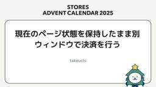
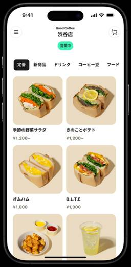
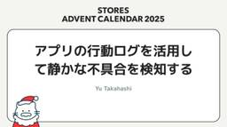
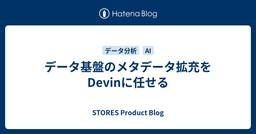
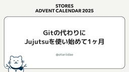
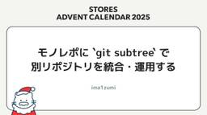

STORES Product Blog
https://product.st.inc/
こだわりを持ったお商売を支える「STORES」のテクノロジー部門のメンバーによるブログです。
フィード

現在のページ状態を保持したまま別ウィンドウで決済を行う
STORES Product Blog
こんにちは。STORES で Webエンジニアをしております、takeuchiです。 Webアプリケーションで決済を提供する場合、ユーザーはアプリから決済代行業者 (PSP) が用意した決済画面へ遷移します。 この決済画面でユーザーが支払い情報を入力し、クレジットカード会社や銀行などの実際の決済サービスと通信して処理が行われます。支払い処理が完了すると、決済代行業者はその結果を保持し、ユーザーを再びアプリ側の指定された画面（例：完了画面や結果通知画面）へ自動的に戻します。 ただ今回実装していたページではブラウザのページ遷移を伴う決済フローを組み込むにあたって、次のような課題がありました。 決済…
1日前

脆弱性診断の取り組み
STORES Product Blog
こんにちは。セキュリティ本部の yokoyama です。 セキュリティ本部では、「STORES プラットフォームに内在するセキュリティリスクを適切にコントロールする」をミッションに、日々さまざまな活動に取り組んでいます。 その活動の一環として、全サービスを対象に脆弱性診断を内製で実施しています（一部は外部ベンダーの支援を受けています）。 今回は、私たちが実施している脆弱性診断の取り組みについて、その一部をご紹介します。 診断種類 診断の流れ 診断計画の策定 診断対象の精査 診断対象の精査例 Web アプリケーション診断の実施 診断の実施例 診断結果の取りまとめ 脆弱性の対応 おわりに 診断種類…
2日前

モバイルオーダーのエンジニアがお店にディープダイブするまで 1
1
STORES Product Blog
この記事は STORES Advent Calendar 2025 の 11 日目の記事です。 STORESでWebアプリケーションエンジニアやってる染谷(somezi)です。現在はモバイルオーダーを開発しています。 STORES モバイルオーダーでは2025年4月時点で下記の課題を抱えていました。 店舗スタッフさんが注文を見て商品を提供するためのキッチンディスプレイに機能が足りておらずキッチンの課題を解決できてない テイクアウト注文のみ対応していたので、飲食店の中でも狭い市場の中での課題解決に留まっている ところで皆さん2025 秋アップデート見ましたか？？上述の課題を解決し、モバイルオーダ…
2日前
DMARC の取り組み 1
STORES Product Blog
こんにちは。セキュリティ本部の yokoyama です。 セキュリティ本部では、「STORES プラットフォームに内在するセキュリティリスクを適切にコントロールする」をミッションに、日々さまざまな活動に取り組んでいます。 少し時間が経ってしまいましたが、2025年6月に全サービスドメインの DMARC ポリシーを quarantine に移行しました。 今回は、DMARC の取り組みについてご紹介します。 DMARC について STORES での DMARC の取り組みについて 目標設定 取り組み概要 DMARC ポリシー none の設定と現状把握 SPF と DKIM の整備 none か…
4日前

アプリの行動ログを活用して静かな不具合を検知する
STORES Product Blog
この記事は STORES Advent Calendar 2025 の 8 日目の記事です。 こんにちは、 STORES でレジアプリのモバイルオーダー周りの開発をしている yu です。 レジアプリでは、 Firebase Analytics を用いて以下のような粒度で行動ログを取得しています。 画面Aを開いた トグルをOFFにした ボタンBをタップした 画面Cが開いた しかし、アプリの行動ログはそのままだと「点」の集まりにしか見えません。様々な事業者さまの、様々な端末の行動ログが、テーブルの行としてバラバラに並んでいるだけです。 これは例えば、家族全員分の1週間分のレシートを机にバラまいてい…
4日前

データ基盤のメタデータ拡充をDevinに任せる
STORES Product Blog
はじめに この記事は STORES Advent Calendar 2025 の10日目の記事です。 こんにちは、STORES でデータアナリストをしているyougaiです。 STORES ではデータの民主化を進めており、誰でも BigQuery や Metabase などのBIツールを触ることができます。また、最近では社内向けにデータ分析AIエージェントツールを提供しており、人・AIどちらにとっても、テーブル・カラムがなにを意味するのかを表すメタデータ（今回は主に BigQuery のdescription/カラム説明）の重要性が上がっています。 STORES にはデータエンジニアも在籍して…
4日前

Gitの代わりにJujutsuを使い始めて1ヶ月 3
STORES Product Blog
この記事はSTORES Advent Calendar 2025の9日目の記事です。 こんにちは。Webエンジニアをしているotariidaeです。呪術廻戦は未履修です。 個人的にgitコマンドの代わりにJujutsu（jjコマンド）を使い始めてから1ヶ月ほどが経ちました。 この記事では実際に業務で毎日使ってみてどうだったかをふりかえってみようと思います。 Jujutsuとは Jujutsuは比較的新しいバージョン管理システムです。Gitをバックエンドとして利用できるため、既存のGitリポジトリで自分だけしれっと使い始められます。 # 既存リポジトリで使い始めるにはこのコマンド打つだけ jj …
4日前

モノレポに `git subtree` で別リポジトリを統合・運用する 1
STORES Product Blog
はじめに この記事は STORES Advent Calendar 2025 の 8 日目の記事です。 こんにちは。ima1zumiです。私は以前 bongo というモノレポに、別途開発されていた cdp-dashboard というフロントエンドのリポジトリを統合しました。 リポジトリを統合する手段はいくつかありますが、今回は git subtree を採用しました。なぜ subtree だったのか、実際にどう運用したのかを紹介します。 背景 これまで別々のリポジトリとして管理されていた bongo（Rails / React Router）と cdp-dashboard（Nuxt）ですが、開…
5日前

Fused Library は救いとなるか？
STORES Product Blog
はじめに こんにちは。 STORES 決済 の Android アプリ／SDK の開発をしている n-seki です。 もう年の瀬ですね！今回の記事ではFused Library プラグインを取り上げようと思います。 STORES 決済 の SDK Fused Library プラグインの詳細に入る前に STORES 決済 の話をさせてください。弊社ではアプリのみならずSDK（ライブラリ）も公開しています。 stores.fun このSDKを活用することでクレジットカード決済などのキャッシュレス決済の機能をかんたんにアプリに組み込むことができます。 技術的には、このライブラリは Maven R…
9日前
Liquid Glass 対応が決済アプリへ与える影響について
STORES Product Blog
はじめに この記事は STORES Advent Calendar 2025 の 4 日目の記事です。 STORES 決済の iOS アプリ開発を担当している栗山(@kotetu)です。 今回の記事は、決済アプリチームで現在進行中の Liquid Glass 対応 がテーマです。 本記事では、Liquid Glass 対応の概要についてご紹介した上で、決済アプリチームで事前調査を行なった内容や、調査を進める中で見つかった不具合や現時点で判明している修正方法についてご紹介します。 Liquid Glass 対応とは？ まずはじめに、Liquid Glass 対応の概要についてご紹介します。 iO…
9日前
2025年 1つのSTORESとモノリスへ・開発の大きな変化
STORES Product Blog
こんにちは。STORES のykpythemindです。先日STORES社主催のTech Conference 2025 “What Would You Do?” が開催されました。 弊社VPoEのhogelogからイントロダクションとして今年の大きな変化について話があり、イベント自体にもそれに付随するコンテンツが多くありました。 私はClosing Keynoteとして変化に対するソフトウェアエンジニアの諦念のようなトークを行いましたが、そのエピソードの実体となるSTORESで今年起きたことは多くは語っていません。今年のまとめとして、あらためて今年の変化と混沌について発信しようと思います。 …
9日前
STORES のシステム構成図 2025年冬
STORES Product Blog
この記事はSTORES Advent Calendar 2025の3日目の記事です。 STORES でエンジニアをしております morihirok です。 先日行われた STORES Tech Conf 2025 "What Would You Do?" お疲れ様でした！今年1年本当に頑張ってここまで来たので、完全に燃え尽きました。 product.st.inc さて、このブログでは STORES Tech Conf 2025 で展示した STORES のシステム構成図を、あらためて Product Blog でも公開させていただこうと思います。私と otariidae さんとで頑張って作った…
10日前
Reactのテストのハマりどころ1選
STORES Product Blog
この記事はSTORES Advent Calendar 2025の2日目の記事です。 こんにちは。Webエンジニアをしているotariidaeです。 フロントエンドのテストを取り巻く環境は充実してきています。最近ではVitest Browser Modeの安定版リリースが記憶に新しいですね。STORES 社内ではVitestとTesting Libraryの組み合わせた構成がよく用いられています。 さてこの記事では、私がReactのテストを書く中でハマったポイントとその解決策を1つご紹介します。 ハマりどころ：テストケース間で状態が分離されていない テストケースは互いに独立しているべきです。し…
11日前
STORES Tech Conf 2025 “What Would You Do?” 開催レポート
STORES Product Blog
この記事はSTORES Advent Calendar 2025の1日目の記事です。 こんにちは、技術広報のえんじぇるです。 STORES では、2025年11月26日にSTORES Tech Conf 2025 "What Would You Do?"を開催しました。 storesinc.tech STORES Tech Confは2024年から開催していて、今回が2度目の開催でした。今年のテーマは"What Would You Do?"（あなたはどうする？）。STORES の開発現場が直面している技術課題とその先に向かう道を、結果だけでなく難しさ・判断・深掘りまで含めて共有する場としました…
12日前
STORES Advent Calendar 2025
STORES Product Blog
今年も STORES Advent Calendar をやっていきます！ 更新はXでもお知らせしますので、Xもフォローいただけると嬉しいです！ https://x.com/storesinc_tech カレンダー 各記事へのリンクは随時更新します。 投稿日 執筆者名 タイトル 12月1日 えんじぇる STORES Tech Conf 2025 開催レポート 12月2日 otariidae Reactのテストのハマりどころ1選 12月3日 morihirok STORES のシステム構成図 2025年冬 12月4日 kotetu Liquid Glass 対応が決済アプリへ与える影響について 1…
12日前
RubyWorld Conference 2025 参加レポート
STORES Product Blog
こんにちは、Webエンジニアのima1zumiです。2025年11月6日から7日に島根県松江市で開催されたRubyWorld Conference 2025に参加しました。この記事では参加レポートと、参加したメンバーからの感想をお届けします。 RubyWorld Conferenceは、プログラミング言語Rubyの国内最大のビジネスカンファレンスで、毎年松江市で開催されています。今年は400名ほどの参加だったそうです。 Ruby biz グランプリでSTORESは大賞を受賞しました くにびきメッセ入口の看板 以下は参加したメンバーの感想です。 感想 ima1zumi 印象に残ったセッション： …
24日前
STORES Tech Conf 2025 “What Would You Do?” のお楽しみポイントを紹介！ポスター、zine、スタンプラリー、ブースなど
STORES Product Blog
こんにちは、技術広報のえんじぇるです。 STORES Tech Conf 2025 “What Would You Do?” の開催が近づいてきました！準備に邁進している今日この頃です。 storesinc.tech STORES Tech Conf 2024からコンテンツを大幅に増やしているので、この記事では STORES Tech Conf 2025 “What Would You Do?”のセッション以外のお楽しみポイントを紹介します。 ポスターセッション 前回好評だったポスターセッションがパワーアップし、15の発表があります！ 先日ポスターセッションのレビューをしたのですが、会議室がポ…
24日前
10行の変更でテストを85秒短縮
STORES Product Blog
こんにちは。Webエンジニアをしているotariidaeです。 テストは速ければ速いほど良いものです。善は急げということでさっそく速くしていきましょう。 なにを速くするか 今回速くしていくのは STORES を利用いただいている事業者向け管理画面のバックエンドのテストです。2025年1月から本格的に開発され始めたアプリケーションなので、まだまだ最適化の余地がたっぷり残っていそうですね。Ruby on Rails製で、テストフレームワークはRSpecを使っています。 どうやって速くするか RSpecを速くするためにまずやることといえば、そう、プロファイリングですね。 TestProfのサンプリン…
1ヶ月前
Vue Fes Japan 2025 参加レポート〜1名が登壇＆ゴールドスポンサーとして協賛しました〜
STORES Product Blog
こんにちは、技術広報のえんじぇるです。 STORES は、10月25日に開催されたVue Fes Japan 2025にゴールドスポンサーとして協賛し、また、1名が登壇しました！ 「Demystifying Nuxt Test Utils」というテーマで、STORES のwattanxが登壇しました。 このブログではVue Fes Japan 2025に参加したメンバーから印象に残ったセッション、出来事について聞きました。それぞれの視点のレポートをお楽しみください。 wattanx（Speaker） 印象に残ったセッション: 自分の登壇もあってあまり聞けていませんが… Beyond the F…
1ヶ月前
Nuxt4 アップグレードのススメ
STORES Product Blog
はじめに こんにちは！ STORES で Web エンジニアをしている @m0nch1 です。 STORES にはさまざまなプロダクトが存在しますが、Nuxt を使っているプロダクトが複数あります。 使っているプロダクトの一部画面を紹介しますね。 オーダー管理β 顧客管理 さて、STORES の Nuxt プロダクトは全て Nuxt4 へのアップグレードが完了しました。 どのように進めたのか、大変なことはあったかなどこれから Nuxt4 へのアップデートをする方の一助になればと思ってこれを書いています。 ぜひ参考にしていただければと思います！ そもそも 一応、なぜ Nuxt4 にあげるのか？と…
1ヶ月前
Kotlin Fest 2025 参加レポート
STORES Product Blog
こんにちは、STORES でモバイルアプリを開発している @tomorrowkey です。 Kotlin Fest 2025、お疲れ様でした！「Kotlinを愛でる」をキーワードに1日中Kotlinについて考える濃厚な1日でした。 この記事では、STORES で取り組んだことや、印象に残ったセッションについてみんなの感想をまとめていきたいと思います。 登壇 STORESからは @tomorrowkey が登壇しました。 文字列操作の達人になる ~ Kotlinの文字列の便利な世界 ~ 初学者向けに文字列を題材にKotlinらしい書き方について話しました。 Kotlinはバックエンド言語があるマ…
1ヶ月前
XCTestを使ったUIテストの安定化戦略
STORES Product Blog
XCTestを使ったUIテストを安定させるための実践ノウハウを紹介します。Xcode Cloudを使ってテスト失敗の原因を調査する方法、XCTWaiterやNSPredicateを使った待機処理、キーボードやWebViewなどUI特有の不安定要因の解消までを具体的なコード例とともに解説。
1ヶ月前
WebView/CustomTabsのUIテスト実装をAIで効率化
STORES Product Blog
こんにちは！ブランドアプリを開発しているAndroidエンジニアのkoguchiです。 今回はブランドアプリ（Android）のWebView/CustomTabsのUIテスト実装におけるAI活用について紹介します。 背景 ブランドアプリとはSTORESのプロダクトの一つで、店舗アプリをノーコードで簡単に作成することができるサービスになります。https://stores.fun/brandedapp ブランドアプリの開発チームではアプリの品質維持・向上のため昨年からE2Eテストの導入を行っており、AndroidにおいてはEspressoとRobotパターンを使用してUIテストを実装しています…
1ヶ月前
STORES から1名がVue Fes Japan 2025で登壇＆ゴールドスポンサーとして協賛します
STORES Product Blog
こんにちは、技術広報のえんじぇるです。 STORES は10月25日に開催されるVue Fes Japan 2025にゴールドスポンサーとして協賛します！当日は STORES からCPOを含む9名のメンバーが参加します。参加者のみなさまと交流できるのを楽しみにしています! この記事では、当日登壇するメンバーと、スポンサーとしての STORES について紹介します。 登壇者の紹介 STORES でデザインエンジニアをしながら、Nuxt Ecosystem Team のメンバーである wattanx が登壇します。 タイトル：『Demystifying Nuxt Test Utils』 時間：15…
2ヶ月前
Girls AI Scholarship by STORES 第2期生を募集します！
STORES Product Blog
プログラミング学習をたのしみながら続けるための支援として、AI活用によるプログラミング学習継続支援 Girls AI Scholarship by STORES の第2期生を募集します！ STORES は、「2030年までに、エンジニア職における女性採用比率を30％以上にする」を目標に掲げ、これまでもSTORES Tech Girls Camp、Rails Girls Japanの協賛などテクノロジーのたのしさに「出会う」プログラムと、テックカンファレンスでの託児サポートや女性エンジニア向けランチ会など仲間と共に学びを「深める」ための活動をしてきました。 Girls AI Scholarshi…
2ヶ月前
生成AIを用いたバックオフィス業務の効率化事例
STORES Product Blog
こんにちは、STORES でデータアナリストをしているsueshigeです。 生成AIの発展に伴い、文章作成、画像生成、データ分析など様々な分野での活用事例が報告されています。 一方で、バックオフィス系の業務に関しては報告事例が少なく、生成AIの活用があまり進んでいないように見受けられます。 そこで、今回の記事では、バックオフィス業務のうち、STORES決済の入出金に関する突合作業に生成AIが活用できた事例について報告します。 入出金の突合作業 まず、STORES決済における入出金の突合作業が何かというところを説明します。入金と出金はお金の流れる向きが違うだけで、実質的に重なっている部分が多い…
2ヶ月前
Kaigi on Rails 2025 参加レポート〜2名が登壇＆STORES CAFE for Womenを開催しました〜
STORES Product Blog
登壇直後のmorihirokさんと撮影した集合写真 こんにちは、技術広報のえんじぇるです。 STORES は、9月26日・27日に開催されたKaigi on Rails 2025に協賛し、Anti-bocchi lunch sponsorとして女性向けランチ会STORES CAFE for Womenを開催しました、また、2名が登壇しました！ このブログではKaigi on Rails 2025に参加したメンバーから印象に残ったセッション、出来事について聞きました。それぞれの視点のレポートをお楽しみください。 morihirok（Speaker） 印象に残ったセッション: 5年間のFintec…
2ヶ月前
レシートプリンターの印刷が途中で停止する不具合を解消した話
STORES Product Blog
こんにちは！ STORES レジ の開発をしている iOS / Android エンジニアの @satoryo056 です。 今回は STORES レジ のレシート印刷で起きた不具合と解消方法についてご紹介します。 そして今回対応した内容について、先日行われた iOSDC Japan 2025 で発表してきました。 ブログの最後に発表した感想や登壇資料を掲載しましたので、そちらも合わせてご覧ください。 背景 STORES レジ について STORES レジ （以下、レジアプリ）は iOS と iPadOS 向けに提供しているPOSレジアプリで、店舗のオーナーさんやスタッフさんが実店舗（オフライ…
2ヶ月前
SceneDelegate に移行するには？
STORES Product Blog
STORES ブランドアプリの iOS 版を開発している Megabits です。 UISceneDelegate は iOS 13 で追加され、 6 年が経ちました。最初は iPad でのマルチタスクを管理するためのものでした。同じアプリでも、複数ウィンドウを持つ可能性があるため、シーンで分けてそれぞれのライフサイクルを管理する需要がありました。UISceneDelegate はこの仕事をするクラスです。 しかし、UISceneDelegate への移行は強制ではないため、特に iPad をサポートする予定がなければ、対応しなくても影響はありませんでした。ただ、実行する時に、このような警告が…
2ヶ月前
iOSDC Japan 2025 参加レポート
STORES Product Blog
こんにちは、STORES でモバイルアプリを開発している nekowen です。 まずは iOSDC Japan 2025、お疲れ様でした！今年は STORES から 総勢20名のメンバーが参加し、登壇・ブース出展、スタッフ活動など様々な形で取り組みを行いました。 この記事では、取り組んだ内容や、印象に残ったセッションについて書いていきたいと思います。 iOSDC Japan 2025 とは iOS に関連した技術をテーマとしたエンジニア向けのカンファレンスです。 今年は9/19(金) 〜 9/21(日)の3日間、有明セントラルタワーホールで開催されました。 iosdc.jp 取り組んだこと …
2ヶ月前